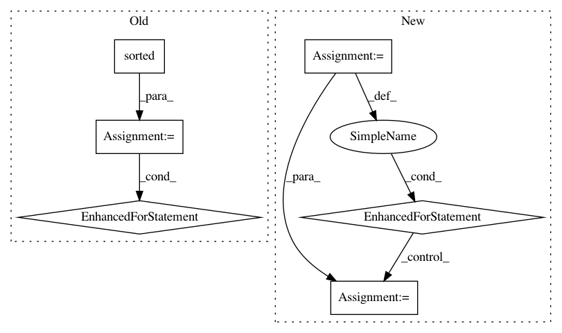

7247571ab448f9ccf6b392a26df0b8b40b1085eb,2018-asr-attention/librispeech/full-setup-attention/tools/collect-train-text.py,,,#,4
Before Change
zip_files = ["%s/%s" % (zip_dir, fn) for fn in zip_files]
assert all([os.path])
for fn in sorted(glob("train-*/*/*/*.trans.txt")):
for l in open(fn).read().splitlines():
seq_name, txt = l.split(" ", 1)
print(txt)
After Change
assert all([os.path.exists(fn) for fn in zip_files])
zip_files = [ZipFile(fn) for fn in zip_files]
for zip_file in zip_files:
assert zip_file.filelist
assert zip_file.filelist[0].filename.startswith("LibriSpeech/")
for info in zip_file.filelist:
assert isinstance(info, ZipInfo)
path = info.filename.split("/")
assert path[0] == "LibriSpeech", "does not expect %r (%r)" % (info, info.filename)
if path[1].startswith("train-"):
subdir = path[1] // e.g. "train-clean-100"
if path[-1].endswith(".trans.txt"):
for l in zip_file.read(info).decode("utf8").splitlines():
seq_name, txt = l.split(" ", 1)
print(txt)
In pattern: SUPERPATTERN
Frequency: 3
Non-data size: 6
Instances
Project Name: rwth-i6/returnn-experiments
Commit Name: 7247571ab448f9ccf6b392a26df0b8b40b1085eb
Time: 2018-05-16
Author: zeyer@i6.informatik.rwth-aachen.de
File Name: 2018-asr-attention/librispeech/full-setup-attention/tools/collect-train-text.py
Class Name:
Method Name:
Project Name: erikbern/ann-benchmarks
Commit Name: b8732f422d71819a250bd33e958766c4a709fbff
Time: 2018-02-24
Author: maau@itu.dk
File Name: create_website.py
Class Name:
Method Name: build_index
Project Name: ylongqi/openrec
Commit Name: 93f84bee4d0c9e082c5ef04fa5f4a0886cdad2db
Time: 2018-09-26
Author: ylongqi@gmail.com
File Name: openrec/recommenders/recommender.py
Class Name: Recommender
Method Name: _optimistic_restore